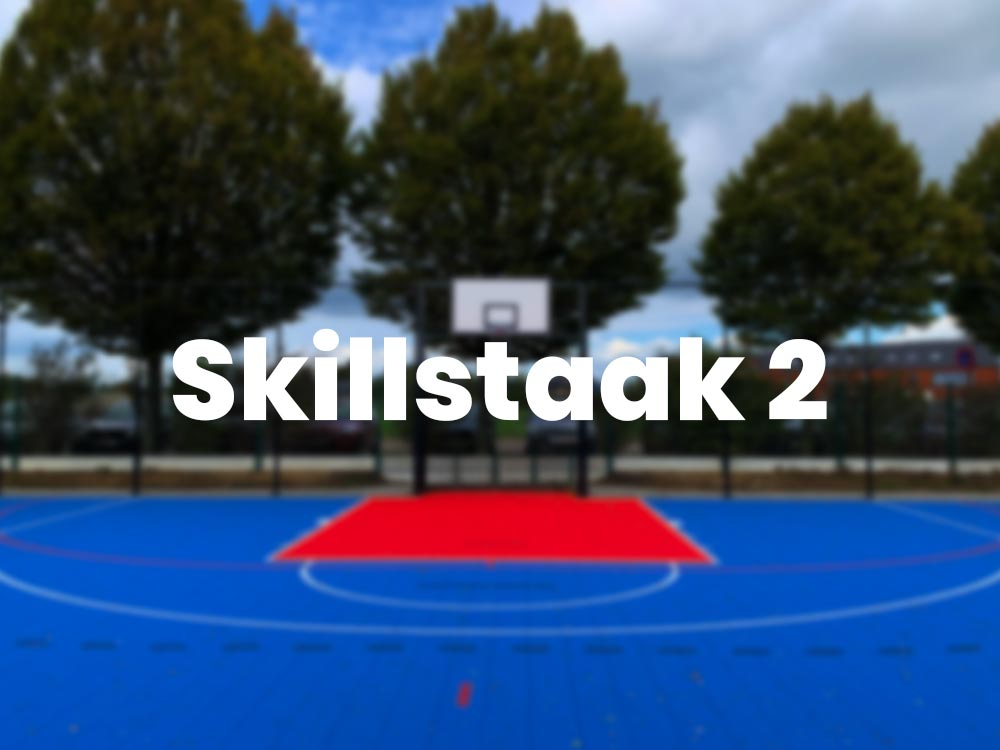
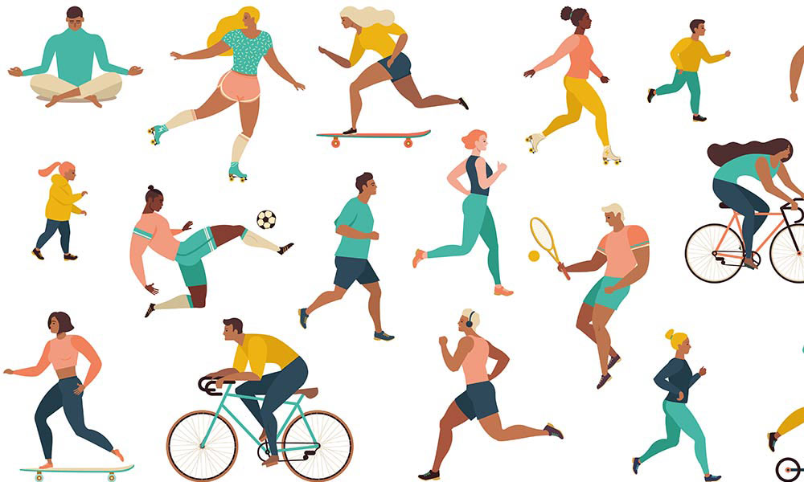

Mijn naam is Jules Debbaut, ik ben geboren op 7 februari 2001. Ik studeer op dit moment Toegepaste Informatica aan de Thomas More Hogeschool in Geel. Ik heb voor deze richting gekozen omdat ik zeker iets wou gaan verder studeren in de richting IT, maar ik wist nog niet zeker wat exact. In het algemeen interesseert technologie mij ook enorm en wil ik hierover ook zo veel mogelijk te weten komen.
Persoonlijke vaardigheden
APP
CCS
AI
IOT
SOFTSKILLS
Ik ben zelf tevreden over mijn resultaat bij APP en CCS. Vakken zoals Webdesign, Java en Netwerken zijn zeker hetgeen waarbij ik me het sterkste voel.
Ook vakken die met AI te maken hebben, lukken mij vrij goed. Ik ben hier dan ook veel mee bezig om vakken als SQL zo goed mogelijk onder de knie te krijgen.
Op softskills heb ik mezelf ook een redelijk hoge score gegeven. Ik kom uit een achtergrond moderne talen: zowel Nederlands als Engels vloeiend spreken is absoluut geen probleem voor mezelf. Een beetje Frans en Spaans gaan ook nog wel.
Hetgeen waarbij ik mij het minste thuis voel is IOT. Zo vind ik het werken met een groot aantal kleine kabeltjes aan een breadboard zeer moeilijk en onoverzichtelijk, en het schrijven van de code in Python blijft ook nog steeds een moeilijkheid. Ik ben echter wel blij dat ik dit gehad heb, want nu heb ik een beter idee van welke vakken mij wel liggen.
Mijn sterke punten
Harde werker
Als ik gemotiveerd ben om ergens voor te gaan, dan ga ik hier ook voor. Ik doe er dan alles aan om mijn taak zo goed mogelijk te voltooien. Mijn eerste Keuzeproject is hier een goed voorbeeld van.
Webdesign
Het maken van websites vind ik nu enorm leuk om te doen. Ik vind dan ook persoonlijk dat ik hier redelijk goed in ben.
Open voor nieuwe ideeën
Ik sta altijd open voor de ideeën van anderen. Naar mijn mening is dit goed voor groepswerken. Zo kan iedereen tot een goede samenwerking komen.
Een moment van groei
Iets waar ik vooral trots op ben is hoe hard ik gegroeid ben in het vak Webdesign. In het begin van het jaar wist ik nog helemaal niets over hoe je een website moest maken en ondertussen ben ik er al helemaal mee weg. In de kaarten hieronder ziet u mijn groei van de eerste skillstaak tot de laatste uitdaging.

Skillstaak 2
Dit was de allereerste website die ik gemaakt had voor Webdesign Essentials. Hoewel deze niet zo geweldig is, toont dit wel aan hoe ver ik ben gekomen nu ten opzichte van het eerste semester.
Dit was mijn tweede website voor Webdesign Essentials. Hier hebben we voor de eerste keer leren werken met het Bootstrap Grid. Mijn kennis hiervan was toen nogal gelimiteerd, maar ook op dit vlak ben ik enorm gegroeid in de voorbije maanden.
De website Actie Mensen in Nood (MIN) heb ik in groep gemaakt voor het eerste Keuzeproject. Hier vind ik dat de meeste groei heb meegemaakt voor het vak Webdesign. Dit Keuzeproject heeft me dan ook enorm geholpen met kennis bij te schaven over het Materialize framework en het opbouwen van moderne websites.
Dit was een website die we moesten maken voor een fictief webbureau genaamd Webtranet. Hier ben ik enorm trots op, het toont een enorme evolutie ook weer aan ten opzichte van de eerste skillstaak.
Dit is het laatste project waar ik aan gewerkt heb. Hier hebben we een 'for-dummies' pagina moeten maken voor een klant over wireless communications. Hier heb ik leren werken met Sass en de verschillende functies ervan zoals variabelen, mixins, partials enzovoort. Hier ben ik enorm trots op: de website is op vrij korte tijd enorm goed eruitgekomen. Het toont ook weer een evolutie ten opzichte van het begin van het jaar.
Nu ik vakken zoals SQL gehad heb, begrijp ik de structuur waarop een database gebouwd wordt al een stuk beter. Zo begrijp ik al iets beter op welke manier gegevens voor een groot bedrijf/project opgeslagen kunnen worden aan de hand van een datamodel.
Buiten de IT Factory
Eén van mijn bewijsstukken buiten de IT factory was het omvormen van mijn oude stel speakers tot een smart speakerset met een Raspberry Pi. De video van hoe ik die heb bereikt kan je hier zien:
Ook heb ik buiten de IT factory een passie voor Webdesign gevonden. Dat is te zien niet alleen aan deze site, maar ook hoeveel moeite ik steek in dit vak om mee te blijven gaan.
Incompetenties
Vakken zoals IOT blijven een moeilijkheid voor mezelf. Zoals ik al had aangehaald, is het werken met een breadboard en Python code helemaal niet mijn ding.
Aan de andere kant zie ik dit ook een beetje als iets positief. Op deze manier ben ik beter te weten gekomen wat mijn exacte interesse is om verder te studeren.
Interesses & Niet-technische vaardigheden
IT
In mijn vrije tijd hou ik me ook graag bezig met allerlei zaken in de IT wereld. Een van de projecten waar ik aan gewerkt heb bijvoorbeeld is waar ik een stel oude speakers herbruik als smart speakers met behulp van een Raspberry Pi.

Sporten
Ook sport doe ik in mijn vrije tijd. Sporten zoals tennis en zwemmen doe ik al het langste en vind ik persoonlijk ook het leukste.
Planning
Wekelijks maak ik voor mezelf enkele plaknotities aan waar ik mijn doelen opzet voor die dag. Op deze manier hou ik mezelf altijd productief bezig en haal ik mijn deadlines optijd.